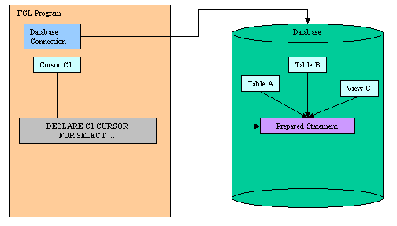
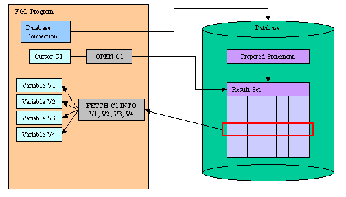
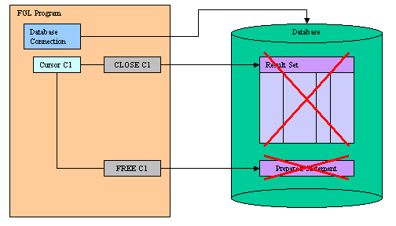

Summary:
See also: Transactions, Positioned Updates, Static SQL, Dynamic SQL, SQL Errors.
A Database Result Set is a set of rows generated by an SQL statement that produces rows, such as SELECT. The result set is maintained by the database server. In a program, you handle a result set with a Database Cursor.
First you must declare the database cursor with the DECLARE instruction. This instruction sends the SQL statement to the database server for parsing, validation and to generate the execution plan.

The result set is produced after execution of the SQL statement, when the database cursor is associated with the result set by the OPEN instruction. At this point, no data rows are transmitted to the program. You must use the FETCH instruction to retrieve data rows from the database server.

When finished with the result set processing, you must CLOSE the cursor to release the resources allocated for the result set on the database server. The cursor can be re-opened if needed. If the SQL statement is no longer needed, you can free the resources allocated to statement execution with the FREE instruction.

The scope of reference of a database cursor is local to a module, so a cursor that was declared in one source file cannot be referenced in a statement in another file.
The language supports sequential and scrollable cursors. Sequential cursors, which are unidirectional, are used to retrieve rows for a report, for example. Scrollable cursors allow you to move backwards or to an absolute or relative position in the result set. Specify whether a cursor is scrollable with the SCROLL option of the DECLARE instruction.
This instruction associates a database cursor with an SQL statement in the current connection.
DECLARE cid [SCROLL] CURSOR [WITH
HOLD] FOR select-statement
DECLARE cid [SCROLL] CURSOR [WITH
HOLD] FOR sid
DECLARE cid [SCROLL] CURSOR [WITH
HOLD] FROM expr
The DECLARE instruction allocates resources for an SQL statement handle, in the context of the current connection. The SQL text is sent to the database server for parsing, validation and to generate the execution plan.
After declaring the cursor, you can use the OPEN instruction to execute the SQL statement and produce the result set.
DECLARE must precede any other statement that refers to the cursor during program execution.The scope of reference of the cid cursor identifier is local to the module where it is declared.
Resources allocated by the DECLARE can be released later by the FREE instruction.
If you use only the DECLARE CURSOR keywords, you create a sequential cursor, which can fetch only the next row in sequence from the result set. The sequential cursor can read through the result set only once each time it is opened. If you are using a sequential cursor for a select cursor, on each execution of the FETCH statement, the database server returns the contents of the current row and locates the next row in the result set.
Example 1: Declaring a cursor with a static SELECT statement.
01MAIN02DATABASE stores03DECLARE c1 CURSOR FOR SELECT * FROM customer04END MAIN
Example 2: Declaring a cursor with a prepared statement.
01MAIN02DEFINE key INTEGER03DEFINE cust RECORD04num INTEGER,05name CHAR(50)06END RECORD07DATABASE stores08PREPARE s109FROM "SELECT customer_num, cust_name FROM customer WHERE customer_num>?"10DECLARE c1 CURSOR FOR s111LET key=10112FOREACH c1 USING key INTO cust.*13DISPLAY cust.*14END FOREACH15END MAIN
Use the DECLARE SCROLL CURSOR keywords to create a scrollable cursor, which can fetch rows of the result set in any sequence. Until the cursor is closed, the database server retains the result set of the cursor in a static data set (for example, in a temporary table like Informix). You can fetch the first, last, or any intermediate rows of the result set as well as fetch rows repeatedly without having to close and reopen the cursor. On a multi-user system, the rows in the tables from which the result set rows were derived might change after the cursor is opened and a copy of the row is made in the static data set. If you use a scroll cursor within a transaction, you can prevent copied rows from changing, either by setting the isolation level to Repeatable Read or by locking the entire table in share mode during the transaction. Scrollable cursors cannot be declared FOR UPDATE.
The DECLARE [SCROLL] CURSOR FROM syntax allows you to declare a cursor directly with a string expression, so that you do not have to use the PREPARE instruction. This simplifies the source code and speeds up the execution time for non-Informix databases, because the SQL statement is not parsed twice.
Example 3: Declaring a scrollable cursor with string expression.
01MAIN02DEFINE key INTEGER03DEFINE cust RECORDs04num INTEGER,05name CHAR(50)06END RECORD07DATABASE stores08DECLARE c1 SCROLL CURSOR09FROM "SELECT customer_num, cust_name FROM customer WHERE customer_num>?"10LET key=10111FOREACH c1 USING key INTO cust.*12DISPLAY cust.*13END FOREACH14END MAIN
Informix only: Use the WITH HOLD option to create a hold cursor. A hold cursor allows uninterrupted access to a set of rows across multiple transactions. Ordinarily, all cursors close at the end of a transaction. A hold cursor does not close; it remains open after a transaction ends. A hold cursor can be either a sequential cursor or a scrollable cursor. Hold cursors are only supported by Informix database engines.
You can use the ? question mark place holders with prepared or static SQL statements, and provide the parameters at execution time with the USING clause of the OPEN or FOREACH instructions.
Example 4: Declaring a hold cursor with ? parameter place holders.
01MAIN02DEFINE key INTEGER03DEFINE cust RECORDs04num INTEGER,05name CHAR(50)06END RECORD07DATABASE stores08DECLARE c1 CURSOR WITH HOLD09FOR SELECT customer_num, cust_name FROM customer WHERE customer_num > ?10LET key=10111FOREACH c1 USING key INTO cust.*12BEGIN WORK13UPDATE cust2 SET name=cust.cust_name WHERE num=cust.num14COMMIT WORK15END FOREACH16END MAIN
Executes the SQL statement associated with a database cursor declared in the same connection.
OPEN cid
[ USING pvar {IN|OUT|INOUT}
[,...] ]
[ WITH REOPTIMIZATION ]
The USING clause is required to provide the SQL parameters as program variables, if the cursor was declared with a prepared statement that includes (?) question mark placeholders.
A subsequent OPEN statement closes the cursor and then reopens it. When the database server reopens the cursor, it creates a new result set, based on the current values of the variables in the USING clause. If the variables have changed since the previous OPEN statement, reopening the cursor can generate an entirely different result set.
The IN, OUT or INOUT options can be used to call stored procedures having input / output parameters and generating a result set. Use the IN, OUT or INOUT options to indicate if a parameter is respectively for input, output or both. For more details about stored procedure calls, see SQL Programming.
Sometimes, query execution plans need to be re-optimized when SQL parameter values change. Use the WITH REOPTIMIZATION clause to indicate that the query execution plan has to be re-optimized on the database server (this operation is normally done during the DECLARE instruction). If this option is not supported by the database server, it is ignored.
In a IBM Informix database that is ANSI-compliant, you receive an error code if you try to open a cursor that is already open. Informix only!A cursor is closed with the CLOSE instruction, or when the parent connection is terminated (typically, when the program ends). By using the CLOSE instruction explicitly, you release resources allocated for the result set in the db client library and on the database server.
01MAIN02DEFINE k INTEGER03DEFINE n VARCHAR(50)04DATABASE stores05DECLARE c1 CURSOR FROM "SELECT cust_name FROM customer WHERE cust_id>?"06LET k = 10207OPEN c1 USING k08FETCH c1 INTO n09LET k = 10310OPEN c1 USING k11FETCH c1 INTO n12END MAIN
Moves a cursor to a new row in the corresponding result set and retrieves the row values into fetch buffers.
FETCH [ direction ] cid [
INTO fvar [,...] ]
where direction is one of:
{
NEXT
| { PREVIOUS | PRIOR }
| CURRENT
| FIRST
| LAST
| ABSOLUTE position
| RELATIVE offset
}
The FETCH instruction retrieves a row from a result set of an opened cursor. The cursor must be opened before using the FETCH instruction.
The INTO clause can be used to provide the fetch buffers that receive the result set column values.
A sequential cursor can fetch only the next row in sequence from the result set.
The NEXT clause (the default) retrieves the next row in the result set. If the row pointer was on the last row before executing the instruction, the SQL Code is set to 100 (NOTFOUND), and the row pointer remains on the last row. (if you issue a FETCH PREVIOUS at this time, you get the next-to-last row).
The PREVIOUS clause retrieves the previous row in the result set. If the row pointer was on the first row before executing the instruction, the SQL Code is set to 100 (NOTFOUND), and the row pointer remains on the first row. (if you issue a FETCH NEXT at this time, you get the second row).The CURRENT clause retrieves the current row in the result set.
The FIRST clause retrieves the first row in the result set.
The LAST clause retrieves the last row in the result set.
The ABSOLUTE clause retrieves the row at position in the result set. If the position is not correct, the SQL Code is set to 100 (NOTFOUND). Absolute row positions are numbered from 1.
The RELATIVE clause moves offset rows in the result set and returns the row at the current position. The offset can be a negative value. If the offset is not correct, the SQL Code is set to 100 (NOTFOUND). If offset is zero, the current row is fetched.
01MAIN02DEFINE cnum INTEGER03DEFINE cname CHAR(20)04DATABASE stores05DECLARE c1 SCROLL CURSOR FOR SELECT customer_num, cust_name FROM customer06OPEN c107FETCH c1 INTO cnum, cname08FETCH LAST c1 INTO cnum, cname09FETCH PREVIOUS c1 INTO cnum, cname10FETCH FIRST c1 INTO cnum, cname11FETCH LAST c112FETCH FIRST c113END MAIN
Closes a database cursor and frees resources allocated on the database server for the result set.
CLOSE cid
After using the CLOSE instruction, you must re-open the cursor with OPEN before retrieving values with FETCH.
01MAIN02DATABASE stores03DECLARE c1 CURSOR FOR SELECT * FROM customer04OPEN c105CLOSE c106OPEN c107CLOSE c108END MAIN
This instruction releases resources allocated to the database cursor with the DECLARE instruction.
FREE cid
All resources allocated to the database cursor are released.
The cursor should be explicitly closed before it is freed.01MAIN02DEFINE i, j INTEGER03DATABASE stores04FOR i=1 TO 1005DECLARE c1 CURSOR FOR SELECT * FROM customer06FOR j=1 TO 1007OPEN c108FETCH c109CLOSE c110END FOR11FREE c112END FOR13END MAIN
A FOREACH block applies a series of actions to each row of data that is returned from a database cursor.
FOREACH cid
[ USING pvar {IN|OUT|INOUT} [,...] ]
[
INTO fvar [,...] ]
[ WITH REOPTIMIZATION ]
{
statement
| CONTINUE FOREACH
| EXIT FOREACH
}
[...]
END FOREACH
Use the FOREACH instruction to retrieve and process database rows that were selected by a query. This instruction is equivalent to using the OPEN, FETCH and CLOSE cursor instructions:
You must declare the cursor (by using the DECLARE instruction) before the FOREACH instruction can retrieve the rows. A compile-time error occurs unless the cursor was declared prior to this point in the source module. You can reference a sequential cursor, a scroll cursor, a hold cursor, or an update cursor, but FOREACH only processes rows in sequential order.
The FOREACH statement performs successive fetches until all rows specified by the SELECT statement are retrieved. Then the cursor is automatically closed. It is also closed if a WHENEVER NOT FOUND exception handler within the FOREACH loop detects a NOTFOUND condition (that is, SQL Code = 100).
The USING clause is required to provide the SQL parameter buffers, if the cursor was declared with a prepared statement that includes (?) question mark placeholders.
The IN, OUT or INOUT options can be used to call stored procedures having input / output parameters and generating a result set. Use the IN, OUT, or INOUT options to indicate if a parameter is respectively for input, output, or both. For more details about stored procedure calls, see SQL Programming.
The INTO clause can be used to provide the fetch buffers that receive the row values.
Use the WITH REOPTIMIZATION clause to indicate that the query execution plan has to be re-optimized.
The CONTINUE FOREACH instruction interrupts processing of the current row and starts processing the next row. The runtime system fetches the next row and resumes processing at the first statement in the block.
The EXIT FOREACH instruction interrupts processing and ignores the remaining rows of the result set.01MAIN02DEFINE clist ARRAY[200] OF RECORD03cnum INTEGER,04cname CHAR(50)05END RECORD06DEFINE i INTEGER07DATABASE stores08DECLARE c1 CURSOR FOR SELECT customer_num, cust_name FROM customer09LET i=010FOREACH c1 INTO clist[i+1].*11LET i=i+112DISPLAY clist[i].*13END FOREACH14DISPLAY "Number of rows found: ", i15END MAIN